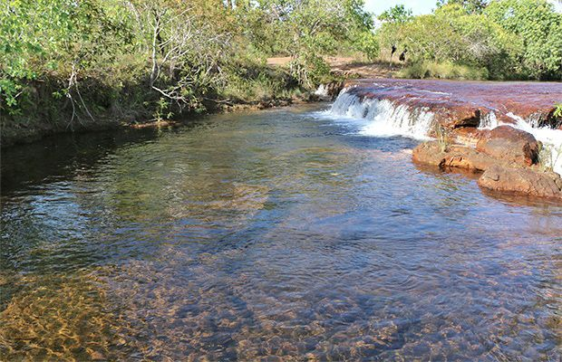

Jalapão

O parque estadual do Jalapão é uma unidade de conservação brasileira de proteção integral à natureza localizada na região leste do estado do Tocantins. O território do parque, com uma área de 158 970,95 ha, está distribuído pelos municípios de Mateiros e São Félix do Tocantins.Criado em 12 de janeiro de 2001,Jalapão é o maior parque estadual do Tocantins. A vegetação no parque é predominantemente a de cerrado ralo e a de campo limpo com veredas.
Sua posição estratégica possui continuidade com a área de proteção ambiental do Jalapão, a estação ecológica Serra Geral do Tocantins e o parque nacional das Nascentes do Rio Parnaíba.
A região é considerada a principal atração turística do estado do Tocantins, sendo que em 2008 foi gravado um reality show da Rede CBS na região chamado Survivor: Tocantins. Em 2017, serviu de cenário para diversas cenas da novela O Outro Lado do Paraíso da Rede Globo. Uma de suas características é a produção de artesanato de capim dourado e seda de buriti, que se tornou principal fonte de renda para as comunidades locais e tem sido alvo de estudos e ações para garantir seu uso sustentável, ecológica e economicamente.
Clique aqui para voltar